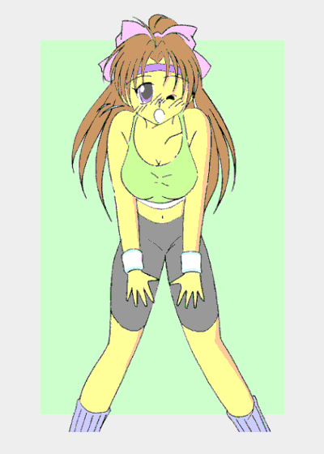

「…………ど、どうするんです？ ……これから？」
長い沈黙を破り僕は恐る恐る声を出した。……が、返事は誰からも返ってこなかった。
それほど広くはない研究室にいるのは、当事者を含めて４人。その全員が俯いたまま押し黙っていて、なかなか喋ろうとはしなかった。
どうしてこうなってしまったんだろう……？
僕はこの研究室を訪れたつい２時間ほど前の事を思い出しながら、隣にいる人物を見た。
僕はアイドル？
（前編）
作：ライターマン
僕の名前は立川光司（たちかわ・こうじ）。都内の大学に通う１年生で、先日終わった後期試験の後は長い春休みをエンジョイする予定……だった。
その後期試験の全日程が終了してから２日後、電話で呼び出された僕は、研究室が並ぶ廊下を歩いていた。
必修科目の一つの試験を受け損ねた僕は、再試験を受けさせてもらうように頼んでおり、担当の教授から「話があるから」と連絡があったのだ。
「ええっと……佐々木……藤岡……と、ここか天本研究室は」
ようやく探し当てた研究室の扉を開こうとした僕は、反対側から同じように歩いてくる二人の女性に気がついた。
「潮……宮口……天本……あったわみずきちゃん、ここよ」
二人のうち年上の方(と言っても２０代半ばくらい)の女性が、もう一人に話しかけた。
話しかけられた方は僕と同じくらいの女の子で、彼女はその女性に頷き返し、そして僕に気がついてこっちを見た。
そして僕は、その女の子の顔を見て思わずつぶやいた。
「鷹城……みずき……さん？」
その言葉に女の子——みずきさんはにっこりと微笑みながら頷いた。
鷹城みずき（たかしろ・みずき）。
この名前のアイドルを知ってる人は結構多いと思う。
２年少し前にデビューした彼女は、何本ものヒット曲を歌い、熱狂的なファンも多い。かくいう僕も彼女のＣＤを持っている。
そして彼女は僕と同じ大学の一年生、つまり同期生でもあったのだ。
……とは言っても彼女と僕とは学部が違い、しかも受験が終わって芸能活動を積極的に行なっている彼女に出会う事なんて、今まで一度もなかった。
それがこんな所でこんな形で会うなんて……ああっ、サインペンと色紙を持って来ておくべきだった！！ 僕は喜ぶと同時に口惜しがった。
「あ、あの……もしかして……みずきさんも……教授に呼ばれて？」
僕は興奮しながらみずきさんに話しかけた。隣でマネージャらしき人が僕をにらんでいたけど、滅多にない機会だからこの際それは無視する事にした。
みずきさんはコクリと頷きながら言った。
「ええ、キャンペーンの帰りに予約していた便が急に欠航になって、試験に間に合わなくて……」
「ああ、ちょうど例の故障騒ぎの時でしたよね」
そう言って僕も頷く。たしかエンジンに破損があるのが見つかって、同型の飛行機が一斉点検で欠航になり大騒ぎになったのが、試験のあった時期だった。
すると今度は、みずきさんの方が僕に質問してきた。
「あなたも呼ばれたのは、やっぱり試験の事で？ ええっと……」
「立川光司です。……そうなんですよ。試験を受けに学校に行く途中で、ちょっとトラブルに巻き込まれちゃって……」
そう言って、僕は苦笑いをしながら頭を掻いた。
あの日、僕が受ける試験は最後の時間帯に行なわれるその１科目しかなかったので、昼を過ぎてからアパートを出た。
大学へ行く途中、突然悲鳴が上がり、曲がり角から２人乗りのスクーターが飛び出して、こちらに向かってきた。
すぐ後から女性が出てきて、「ひったくりよっ！！」と叫ぶのを聞いた僕は、両手を広げてそのスクーターが通過するのを妨げた。
そしてスクーターを降りて僕に襲い掛かってきた２人のうち、一人の鳩尾に肘打ちを叩き込み、もう一人を投げ飛ばした。
僕はクラブには入っていないけど、高校の頃までは道場に通っていたのでこの程度の事なら今でも出来た。
そしてしばらく２人を押さえつけ、駆けつけた警察官に引き渡したのだけど、その頃にはもう試験の開始に間に合わなくなっていた。
さらに２人を取り押さえた状況を詳しく聞きたいという事で警察署に連れて行かれ、僕は完全に試験を受ける事が出来なくなってしまったのだ。
２人でそんな会話をしていると、研究室の扉が開いて中から声がした。
「２人とも来たようだな。そんなところで立ち話もなんだから中に入りなさい」
みずきさんともう少し話をしていたかったけど、僕たちは教授とマネージャに促されて研究室の中に入っていった。
天本教授。
学内ではかなり有名な先生だ。
生物学を始め、化学、遺伝子学、機械工学と多岐の分野に渡って博士号を持ち、いろんな賞を受賞したり特許を取得したりしているらしい。
少し長い髪は全て真っ白で、定年退職してもおかしくない年齢に見えるこの教授は、少々変わり者で……黒マント姿で現れて授業をしたかと思えば、網状の帽子をかぶって、間違ってキャンパスに迷い込んできたお爺さんのような格好で学内を歩いている事もあるのだ。
そしてその授業内容は結構厳しい。理由なく遅刻や欠席をすると、「もう来なくていい」と言われ、月に一回くらいで課されるレポートの課題内容はかなり難しい。
このように変わり者で厳しい人ではあるけれど、教職員や生徒には人気があった。授業はユーモアを交えて面白かったし、生徒にちゃんと教えようと言う気持ちが伝わってくるのだから。
その天本教授は、僕たちを正面に座らせてからゆっくりと話し始めた。
君達の事情は聞いているし、止むを得ない状況だった事も理解できる。私としては再試験を受けさせたい……と。
その言葉に僕たちは喜んだが、同時に教授はこう言った。
「だが……残念な事に再試験を行なう事は出来ない。このような事態は今まで無かったのでな。再試験をやった事がないので、試験問題を一から作らなきゃならん」
僕はがっくりと肩を落とした。隣に座っているみずきさんも同様だった。
そんな僕たちに教授は一つの提案をした。
現在教授が行なっている研究の被験者としてデータの採取に協力すれば、今まで提出したレポートの評点で単位を与えようというのだ。
「なに、データの採取——といっても、身体を切り開いたり体液を抜き取ったりとかはせん。脳内からの信号を機械で読み取るだけじゃ」
僕は少し迷った。だけど教授の科目は必修科目で、２年生までに単位を取得していないと進級できない。チャンスがあるならぜひ取っておきたかった。
「判りました。僕、被験者になります」「わ、私も……」
僕とみずきさんは、教授に向かって揃って頷いた。
研究室の奥にある実験室。そこにその装置はあった。
部屋の隅に大き目の冷蔵庫を並べたような物体があったけど、側にキーボードとモニターがあるので、たぶんこれはスーパーコンピュータか何かなのだろう。
そこからから何本もの線が束になったケーブルが２つ出ていて、それぞれがヘルメットのような装置に繋がっている。
「それじゃあ二人ともそこに座って、そのヘルメットを頭につけてくれるか？」
「あのう……これって何をする装置なんです？」
教授の言葉に、僕は恐る恐る質問をする。
「人間の身体の中から、脳波や脈拍などを取り出して記録するためのものじゃ。……本来なら電極の一本一本を身体に直接取り付けなければならんが、時間がかかるし被験者が嫌がるからの。ワシがちょっと改良したんじゃ」
「……へえ、これを教授が作ったんですか？ すごいですね」
「なあに、これくらいは大した事はない。それにこれはあくまで道具じゃ。……ところで人間の脳はコンピュータに例えられる事が多いのは知っておるな？」
「はい」
「人間はそれぞれに固有の人格を持ち、同じ刺激を与えられても、それによって起こる反応や行動は様々じゃ。この人格のもっとも核をなすものが性質、いわゆるコンピュータのＯＳみたいな物じゃ」
「ＯＳって……Windowsとか？」
「違う違う。ＯＳというのはコンピュータと人間とをつなぐための最低限のプログラムの事で、それ以外の部分が異様に巨大になったWindowsは、いわば『ＯＳ付きプログラム集合体』じゃな。UnixやLinuxでは『カーネル』と呼ばれておるものが、本来のＯＳに該当するのじゃが、聞いた事はあるかな？」
「……いいえ、全然」
「やれやれ、若いのにこの位の事も知らんのか。……まあいい、人格の中で核を構成するのは性質じゃが、その大部分は性質以外の部分、人生で経験してきた様々な記憶、それと記憶の内容から構成されたデータベースみたいなもので行動を決定するのに重要な役割を果たす性格が占めておる。ワシの研究は、人間の脳及び身体から記憶や性格、さらには性質に関する『情報』を取り出せないかということなんじゃ」
「そんな事が……出来るんですか？」
「ワシが考えた理論では、できると思うんじゃがの。それを確かめるために少しでも多くの被験者からサンプルを取る必要があるんじゃ。……さ、説明はこの位にして、そろそろ始めるかの」
「判りました」
教授の説明を受けた僕は、ヘルメットを被り、顎ひもを留めて固定した。僕が椅子に座るとみずきさんもヘルメットを被り、椅子に座ったところだった。
「……それじゃ始めるぞ」
そう言うと、教授はヘルメットの装置の電源を入れ、キーボードを操作した。
始めはヘルメットと接触している部分からチリチリとした感じがしたけど、時間が経つうちにそれは少しずつ消えていった。
しばらくはスーパーコンピュータが出す音以外は何も聞こえなかったんだけど、そのうち建物の外から低い音が響くように聞こえてきた。
「鷹城君、波形が少し乱れ取るようだが……ああ、雷の音が聞こえるからかね？」
「ええ、あたし少し苦手で……」
「なあに、大丈夫じゃ。この校舎は少し古いが、ここに雷が落ちるなんてことは滅多に……」
教授は少しおどけた感じでそう言って、みずきさんを安心させようとした。
…………が、
バリバリバリィィィッ！！
突然大きな音とともに目の前が真っ白になり、僕は気を失ってしまった。
「…………ちゃん、目を覚まして！！」
気絶していた僕は、身体を揺さぶられる感じと女の人の声で目を覚ました。
目を開けるとそこは実験室の中だった。そしてみずきさんのマネージャの女の人が覗き込むようにして僕を見ていた。
「……一体……何が？」
僕は身体を起こそうとしたけど、力が入らず、思い通りに身体が動かなかった。
わずかに動く口でそれだけ言うと、女の人はやさしく微笑みながら答えた。
「じっとしていて。落雷のショックがまだ残っているでしょうけど、すぐに回復すると教授がおっしゃってたわ」
「落雷？」
「そうよ、この校舎の電線に雷が落ちてスーパーコンピュータに高圧電流が流れたの。そのショックであなた達は気絶したのよ」
「……そうだったんだ」
「でもよかったわ。みずきちゃんに万一のことがあったらと思うと、あたしもうどうしていいか……」
そう言って涙ぐむ女の人を、僕は不思議な思いを抱きながら見ていた。
(どうしてこの人は見ず知らずの僕をこんなに心配してくれるのだろう？ それに今僕の事を「みずきちゃん」と呼んでいたような……)
ぼんやりとそう思いながら、身体が動くようになった僕は上半身を起こそうと身体を横に向けた。
すると目の前には、僕と同様に倒れていて、教授によって起こされている人物がいた。
その人は僕によく似てた……まるで僕が分裂してそこにいるかのように……
そしてその人は、僕の方を見て驚きに目を見開きながら呟いた。
「そんな……あたしが……もう一人……いる？」
もう一人の「僕」のその言葉に、僕は言い知れぬ不安を感じた。
およそ僕らしからぬ……というより、男らしからぬその言葉。そして目の前にいるのが僕だとすると、僕自身は一体……？
上半身を起こした僕は、恐る恐る自分の身体を見た。
すると僕が着ていたのは、さっきまでみずきさんが着ていたワンピースだった！！ しかも……胸の部分は膨らんでいて、目の前にハラリと長い髪が落ちてきたではないか！！
そんな……まさか……つまりこれって……
「「入れ替わった！？」」
僕と、目の前にいる「僕」……つまりみずきさんは同時に叫んだ。
それからが大変だった。
僕とみずきさんは、お互いが入れ替わった事を教授とマネージャ（鳴瀬さんと言うらしい）に説明したのだけど、最初は全然信じてもらえなかった。
「そんな映画や小説みたいな出来事を信じる事は出来ないわ。……もしそれが本当なら、何か証明できるものはある？」
マネージャの鳴瀬さんに言われて、僕は困ってしまった。
僕が「立川光司」であることを証明する方法なんて、すぐには思いつかなかった。
今の僕の身体はみずきさんのものだ。長い髪も高く澄んだ声も、白くてスラリとした手足も括れたウエストも、そして大きく膨らんだ胸も……
記憶は間違いなく僕自身のものだけど、それをどうやって証明するのか？ 僕が記憶している事が、「僕しか知らない事」だとどうやって確認させればいいのだ？
その時、僕の姿をしたみずきさんが鳴瀬さんの耳元で何かを囁いた。すると鳴瀬さんの目が大きく見開かれた！！
「うそ……それじゃ……本当に入れ替わってるの？」
その言葉にみずきさんはコクリと頷いた。
「信じるのかね？ この二人の言葉を……」
教授の質問に鳴瀬さんがはっきりと頷く。
「ええ、彼……ごめんなさい、みずきちゃんだったわよね……が私に囁いたのは、今度の新曲の歌詞なんです。２ヵ月後のコンサートで発表して売り出す予定だったから、部外者が知る筈ありません」
「なるほど……確かに二人は入れ替わったようじゃな。しかしどうしてこんな事が……」
「それに……このまま元に戻らなかったら今後一体どうすればいいのか……」
その言葉に僕たち４人は、皆押し黙ってしまった。
「今回の現象の原因について考えてみたんじゃが……」
あまりにも長い沈黙を破って教授の発した言葉に、僕たち３人は一斉に教授の方を見た。
「原因がわかったんですか？」
「いや、あくまでも推測じゃ。あの時君達２人はワシの開発した装置により人格のデータを取り出そうとしていた。これが原因だという可能性は十分にある。だからその時の記録とプログラムを調べて、同じような現象を起こせれば……」
「元に戻るんですね？」
「可能性はあると思う。じゃが同じ現象を起こすためには、スーパーコンピュータの記録を調べて何が起こったのかを正確に調べなきゃならん。ところがスーパーコンピュータの方は落雷のショックで動作不良を起こして起動しなくなったんじゃ」
「すぐには直せないんですか？」
「無理じゃ、パソコンと違って電気屋で部品を交換して修理という訳にはいかん。メーカに部品を注文しなければためじゃ。それに今年度の予算はもう使い切ってしまってな、新年度の予算を使えるのも、特許料が入るのも４月になってから……つまり２ヶ月も先じゃ」
「２ヶ月……」
僕は呆然として呟いた。つまり最低でも２ヶ月の間、僕は女の子のみずきさんとして、そしてみずきさんは男の子の僕として過ごさなければならないのか？
その時鳴瀬さんが言った。
「教授、そのスーパーコンピュータの修理費はこちらで負担します。それですぐに修理にかかったらどのくらいで出来ます？」
「それならば２週間以内に修理が可能じゃ。ただし、そこからデータの解析を始めるので、いつ結論が出るかは判らんぞ」
「出来るだけ早く結論が出るようにお願いします。問題はその間の仕事だけど……立川君……だったかしら？」「は、はいっ！！」
「元に戻るまでの間、あなたにみずきちゃんの代わりをお願いするわ」
「…………ええっ！？」
鳴瀬さんの言葉に僕はびっくり仰天してしまった。
「あーあーあーああ〜」
鳴瀬さんが伴奏するピアノの音に合わせて僕が声を出すと、高く澄んだみずきさんとしての声が夜のスタジオに響く。
急病という理由でみずきさんの一週間の予定をキャンセルした鳴瀬さんは、僕とみずきさんを知り合いが持っているという山の中のスタジオに連れて行った。
ここで、みずきさんの替え玉としての特訓を行おうという訳である。
僕としてはみずきさんの代わりにステージに立って歌を歌うなんてやりたくはなかったけれど、「これ以上スケジュールに穴をあけたら、みずきちゃんのアイドル生命が絶たれてしまうわ」と言われては引き受けるしかなかった。
「音程のコントロールはいいようね。……よかったわ。もしあなたが音痴なら、とても一週間でみずきちゃんの替え玉なんて出来ないから」
鳴瀬さんが少しホッとしたように言った。
カラオケは好きだったからよく利用していたし、周りの人からも上手いと言われていた。ただ、自分の身体が小柄だった事もあり、女性歌手の歌ばかりリクエストされていたのだが……
そういう事もあって歌うのに少しだけ自身があった僕は、鳴瀬さんの言葉に少しだけ安心した。
「それじゃあ次は歌の練習ね。上手く一週間で出来るかしら？」
「あの、みずきさんの曲なら全部の歌詞を憶えてますけど？」
「判ってないわね。大変なのは歌詞以外の部分よ」
ブチッ——
それまで鳴り響いていた曲が突然中断された。
「駄目駄目！！ もっと身体全体を使って表現して！！ それにそんなにマイクを離したら声をひろえないじゃない！！」
「す、すいません」
「それじゃあまた最初から行くわよ」
そう言って鳴瀬さんは再び曲を流し始めたのだが、すぐにまた中断した。
「マイクばっかり見ない！！ 視線はもっと遠く観客全体に向けるように！！」
鳴瀬さんの容赦ない叱責が飛ぶ。
「は、はいっ！！」
僕は倒れそうになるのを何とか我慢して答えた。
今やっているのは振り付けの練習である。復帰後早々スタジオでの収録が予定されているため、その曲だけでも振り付けをマスターしなければならなかったのだ。
身体を動かすために、今の僕はレオタードを着て額にバンダナを巻き、髪を後ろでまとめてポニーテールにしている。
このレオタードを着る時も一騒動あった。
みずきさんは自分の下着姿を他人に見られるのを嫌がったし、僕もたとえ今は僕自身の身体でも、女性の裸を見るのにはまだ抵抗があった。
結局僕は目隠しをして鳴瀬さんに着替えさせてもらう事になったのだけれど、視線を下に向けるとレオタードで身体のラインがくっきりと描かれ、僕は今の自分が「女性」である事を嫌でも認識させられてしまう。
その事実と、身体を動かすたびに揺れてしまう胸のために、練習に集中する事など出来る筈がなかった。

（つづく）
おことわり
この物語はフィクションです。劇中に出てくる人物、団体および病名は全て架空の物で実在の物とは何の関係もありません。
あとがき
どうも、ライターマンです。
私にとっては初めての入れ替わりものなんですが、いかがだったでしょうか？
突然入れ替わってアイドルの代わりをやれといわれた立川光司君。道はまだまだ遠く険しそうです（笑）。
さて、後編ですが特訓の甲斐あって何とかみずきさんの代わりをこなしている光司君にある事態が襲いかかります。
その事体とは？ そして光司君とみずきちゃんは無事元に戻る事が出来るのか？
楽しんでいただければ幸いです。
それではまた。
□ 感想はこちらに □